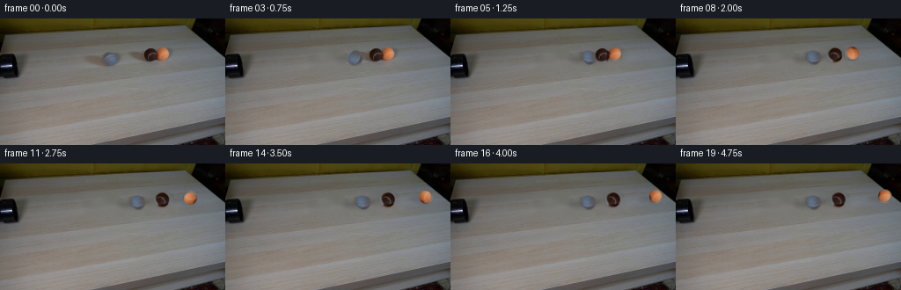
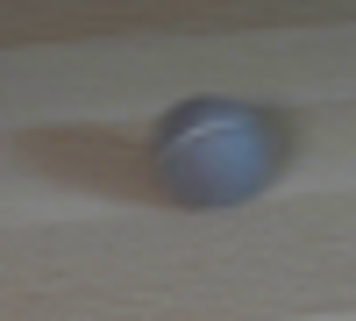
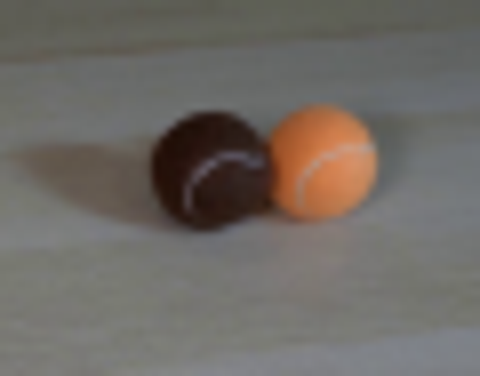
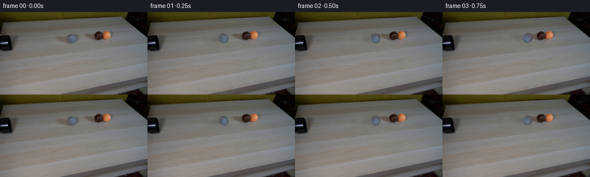
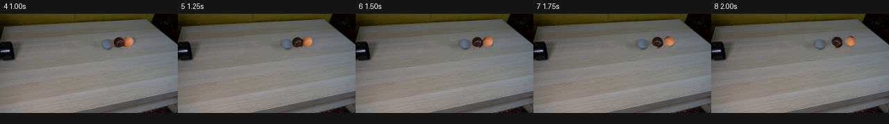

CODING AGENTS AS PIXEL WORLD MODELS
traex/GPT-5.6-Sol · 0028
点击播放 · 原生 RGB 像素
逐轮保存的候选
回放视频、检查图与代码变化。
每份候选均可单独播放。实际图片检查记录在下方工具轨迹中。
候选 01播放与检查图
点击播放 · 原生 RGB 像素

展开代码变化
--- 上一保存版本
+++ 本次保存版本
@@ -0,0 +1,174 @@
+from pathlib import Path
+import cv2
+import numpy as np
+from PIL import Image
+import artifact_io
+
+HERE = Path(__file__).resolve().parent
+SRC = np.asarray(Image.open(HERE / 'first_frame.png').convert('RGB'), dtype=np.uint8)
+H, W = SRC.shape[:2]
+
+# Measured centers/radii in the supplied view. Keeping these values fractional
+# also keeps the small, antialiased balls from jittering on the low-res image.
+G0 = (124.7, 46.0, 8.8)
+B0 = (171.7, 42.0, 8.5)
+O0 = (185.3, 40.7, 7.8)
+
+
+def ellipse(mask, center, axes, value=255):
+ cv2.ellipse(mask, (round(center[0]), round(center[1])),
+ (round(axes[0]), round(axes[1])), 0, 0, 360, value, -1,
+ lineType=cv2.LINE_AA)
+
+
+def clean_plate(remove_targets=False):
+ """Recover the table locally, preserving all of its original grain elsewhere."""
+ mask = np.zeros((H, W), np.uint8)
+ # The old grey ball and its soft left-cast shadow.
+ ellipse(mask, (124.7, 46.0), (11, 11))
+ ellipse(mask, (111.0, 50.5), (20, 7))
+ if remove_targets:
+ ellipse(mask, (171.7, 42.2), (11, 11))
+ ellipse(mask, (185.3, 40.7), (10, 10))
+ ellipse(mask, (158.5, 47.5), (24, 7))
+ ellipse(mask, (179.0, 46.2), (21, 7))
+ # Telea works especially well here because the table grain is almost horizontal.
+ bgr = cv2.cvtColor(SRC, cv2.COLOR_RGB2BGR)
+ out = cv2.inpaint(bgr, mask, 4.0, cv2.INPAINT_TELEA)
+ return cv2.cvtColor(out, cv2.COLOR_BGR2RGB)
+
+
+def sprite_from_source(cx, cy, radius, kind):
+ """Cut out an original ball with a subpixel feathered circular matte."""
+ pad = 3
+ x0, x1 = int(np.floor(cx-radius-pad)), int(np.ceil(cx+radius+pad))+1
+ y0, y1 = int(np.floor(cy-radius-pad)), int(np.ceil(cy+radius+pad))+1
+ rgb = SRC[y0:y1, x0:x1].copy()
+ yy, xx = np.mgrid[y0:y1, x0:x1]
+ d = np.sqrt((xx-cx)**2 + (yy-cy)**2)
+ alpha = np.clip((radius + .65 - d) / 1.20, 0, 1).astype(np.float32)
+
+ if kind == 'brown':
+ # In frame zero the orange ball hides the brown ball's far-right cap.
+ # Complete that tiny cap from its opposite side so it is revealed naturally
+ # once the collision separates the pair.
+ localx = xx - cx
+ hidden = (localx > 4.5) & (d < radius+.5)
+ for py, px in zip(*np.where(hidden)):
+ sx_global = int(round(cx - localx[py, px]))
+ sx = np.clip(sx_global - x0, 0, rgb.shape[1]-1)
+ sample = rgb[py, sx].astype(np.float32)
+ # Light is from camera-right; the newly exposed side is mildly brighter.
+ rgb[py, px] = np.clip(sample * np.array([1.10, 1.08, 1.04]), 0, 255)
+ return rgb, alpha, (x0, y0), (cx, cy)
+
+
+GRAY = sprite_from_source(*G0, 'gray')
+BROWN = sprite_from_source(*B0, 'brown')
+ORANGE = sprite_from_source(*O0, 'orange')
+
+
+def add_shadow(frame, center, radius, velocity=0.0):
+ """Soft, directional contact/cast shadow matching the lamp in frame zero."""
+ layer = np.zeros((H, W), np.float32)
+ # Contact darkening and a longer, faint shadow falling to the lower-left.
+ cv2.ellipse(layer, (round(center[0]-2), round(center[1]+radius*.56)),
+ (round(radius*.95 + velocity*.08), max(1, round(radius*.27))),
+ 0, 0, 360, .28, -1, lineType=cv2.LINE_AA)
+ cv2.ellipse(layer, (round(center[0]-radius*1.05), round(center[1]+radius*.34)),
+ (round(radius*1.55 + velocity*.10), max(2, round(radius*.40))),
+ 0, 0, 360, .12, -1, lineType=cv2.LINE_AA)
+ layer = cv2.GaussianBlur(layer, (0,0), 2.2)
+ # Shadows are slightly cool/neutral and multiply the real table.
+ shade = 1.0 - layer[...,None]
+ frame[:] = np.clip(frame.astype(np.float32) * shade, 0, 255).astype(np.uint8)
+
+
+def paste_ball(frame, sprite, center, angle_deg=0.0, stretch=1.0):
+ """Translate/rotate an original ball sprite. Rotation makes its seam visibly roll."""
+ rgb, alpha, origin, oldcenter = sprite
+ sh, sw = alpha.shape
+ # Rotate about the measured source center; stretch is only used for one impact frame.
+ pivot = (oldcenter[0]-origin[0], oldcenter[1]-origin[1])
+ M = cv2.getRotationMatrix2D(pivot, angle_deg, 1.0)
+ if stretch != 1.0:
+ # squash along travel axis while holding center
+ M[0,0] *= stretch
+ M[0,1] *= stretch
+ M[0,2] = pivot[0] - (M[0,0]*pivot[0] + M[0,1]*pivot[1])
+ rr = cv2.warpAffine(rgb, M, (sw,sh), flags=cv2.INTER_CUBIC,
+ borderMode=cv2.BORDER_REFLECT_101)
+ aa = cv2.warpAffine(alpha, M, (sw,sh), flags=cv2.INTER_CUBIC,
+ borderMode=cv2.BORDER_CONSTANT, borderValue=0)
+
+ # Full-frame affine translation permits smooth fractional motion.
+ sprite_canvas = np.zeros((H,W,3), np.uint8)
+ alpha_canvas = np.zeros((H,W), np.float32)
+ oy, ox = origin[1], origin[0]
+ sprite_canvas[oy:oy+sh, ox:ox+sw] = rr
+ alpha_canvas[oy:oy+sh, ox:ox+sw] = np.clip(aa,0,1)
+ dx, dy = center[0]-oldcenter[0], center[1]-oldcenter[1]
+ T = np.float32([[1,0,dx],[0,1,dy]])
+ moved = cv2.warpAffine(sprite_canvas, T, (W,H), flags=cv2.INTER_CUBIC,
+ borderMode=cv2.BORDER_CONSTANT, borderValue=0)
+ ma = cv2.warpAffine(alpha_canvas, T, (W,H), flags=cv2.INTER_CUBIC,
+ borderMode=cv2.BORDER_CONSTANT, borderValue=0)
+ ma = np.clip(ma,0,1)[...,None]
+ frame[:] = np.clip(frame.astype(np.float32)*(1-ma) + moved.astype(np.float32)*ma,
+ 0,255).astype(np.uint8)
+
+
+def path_y(x, xref, yref, slope=-0.073):
+ return yref + slope*(x-xref)
+
+
+def render():
+ plate_gray = clean_plate(False)
+ plate_all = clean_plate(True)
+
+ # Approach, impact, and post-impact positions at the specified constant 4 fps.
+ gx = [124.7,131.5,139.2,147.1,154.2,157.0,157.2,156.7,156.2,156.0,
+ 156.0,156.0,156.0,156.0,156.0,156.0,156.0,156.0,156.0,156.0]
+ bx = [171.7,171.7,171.7,171.7,171.7,172.5,175.2,178.1,180.5,182.1,
+ 183.0,183.5,183.8,184.0,184.0,184.0,184.0,184.0,184.0,184.0]
+ ox = [185.3,185.3,185.3,185.3,185.3,187.0,190.5,195.0,200.0,205.2,
+ 210.4,215.5,220.2,224.4,228.0,231.0,233.4,235.2,236.5,237.3]
+
+ frames = [SRC.copy()]
+ for i in range(1,20):
+ # Before contact retain the supplied brown/orange pixels exactly. Thereafter
+ # use the fully cleaned table and independently moving original-ball sprites.
+ moving_targets = i >= 5
+ frame = (plate_all if moving_targets else plate_gray).copy()
+
+ gy = path_y(gx[i], G0[0], G0[1])
+ by = path_y(bx[i], B0[0], B0[1])
+ oy = path_y(ox[i], O0[0], O0[1])
+
+ vg = abs(gx[i]-gx[i-1])
+ vb = abs(bx[i]-bx[i-1])
+ vo = abs(ox[i]-ox[i-1])
+ add_shadow(frame, (gx[i],gy), G0[2], vg)
+ if moving_targets:
+ add_shadow(frame, (bx[i],by), B0[2], vb)
+ add_shadow(frame, (ox[i],oy), O0[2], vo)
+
+ # Seam rotation follows arc length/radius. Signs reflect rightward rolling.
+ gangle = -(gx[i]-G0[0])/G0[2] * 57.2958
+ bangle = -(bx[i]-B0[0])/B0[2] * 57.2958
+ oangle = -(ox[i]-O0[0])/O0[2] * 57.2958
+ # Brown is behind orange when they touch; painter's order preserves this.
+ squash_g = .96 if i == 5 else 1.0
+ paste_ball(frame, GRAY, (gx[i],gy), gangle, squash_g)
+ if moving_targets:
+ paste_ball(frame, BROWN, (bx[i],by), bangle, 1.02 if i==5 else 1.0)
+ paste_ball(frame, ORANGE, (ox[i],oy), oangle)
+
+ frames.append(frame)
+ frames = np.stack(frames).astype(np.uint8)
+ assert np.array_equal(frames[0], SRC)
+ return frames
+
+
+if __name__ == '__main__':
+ artifact_io.save(render(), HERE)
可观测工具轨迹
实际执行的命令与返回图片。
命令 1exit 0
/bin/bash -lc "cat prompt.txt && printf '\\n---RULES---\\n' && cat GENERATION_RULES.md"
命令 2exit 0
/bin/bash -lc "find . -maxdepth 2 -type f -printf '%p %s bytes\\n' | sort"
命令 3exit 0
/bin/bash -lc "python3 - <<'PY'
from PIL import Image
im=Image.open('first_frame.png')
print(im.size, im.mode)
PY"命令 4exit 0
/bin/bash -lc "python3 - <<'PY'
from PIL import Image
im=Image.open('first_frame.png')
for name,box in [('gray',(95,25,145,70)),('targets',(145,20,205,67)),('pipe',(0,30,35,78))]:
im.crop(box).resize(((box[2]-box[0])*8,(box[3]-box[1])*8)).save('.tmp/'+name+'.png')
PY"命令 5exit 0
/bin/bash -lc "sed -n '1,240p' artifact_io.py"
命令 6exit 0
/bin/bash -lc "python3 - <<'PY'
import cv2, numpy, PIL
print('cv2',cv2.__version__)
PY
ffmpeg -version | head -2 || true"命令 7exit 0
/bin/bash -lc "cat > generate.py <<'PY'
from pathlib import Path
import cv2
import numpy as np
from PIL import Image
import artifact_io
HERE = Path(__file__).resolve().parent
SRC = np.asarray(Image.open(HERE / 'first_frame.png').convert('RGB'), dtype=np.uint8)
H, W = SRC.shape[:2]
# Measured centers/radii in the supplied view. Keeping these values fractional
# also keeps the small, antialiased balls from jittering on the low-res image.
G0 = (124.7, 46.0, 8.8)
B0 = (171.7, 42.0, 8.5)
O0 = (185.3, 40.7, 7.8)
def ellipse(mask, center, axes, value=255):
cv2.ellipse(mask, (round(center[0]), round(center[1])),
(round(axes[0]), round(axes[1])), 0, 0, 360, value, -1,
lineType=cv2.LINE_AA)
def clean_plate(remove_targets=False):
\"\"\"Recover the table locally, preserving all of its original grain elsewhere.\"\"\"
mask = np.zeros((H, W), np.uint8)
# The old grey ball and its soft left-cast shadow.
ellipse(mask, (124.7, 46.0), (11, 11))
ellipse(mask, (111.0, 50.5), (20, 7))
if remove_targets:
ellipse(mask, (171.7, 42.2), (11, 11))
ellipse(mask, (185.3, 40.7), (10, 10))
ellipse(mask, (158.5, 47.5), (24, 7))
ellipse(mask, (179.0, 46.2), (21, 7))
# Telea works especially well here because the table grain is almost horizontal.
bgr = cv2.cvtColor(SRC, cv2.COLOR_RGB2BGR)
out = cv2.inpaint(bgr, mask, 4.0, cv2.INPAINT_TELEA)
return cv2.cvtColor(out, cv2.COLOR_BGR2RGB)
def sprite_from_source(cx, cy, radius, kind):
\"\"\"Cut out an original ball with a subpixel feathered circular matte.\"\"\"
pad = 3
x0, x1 = int(np.floor(cx-radius-pad)), int(np.ceil(cx+radius+pad))+1
y0, y1 = int(np.floor(cy-radius-pad)), int(np.ceil(cy+radius+pad))+1
rgb = SRC[y0:y1, x0:x1].copy()
yy, xx = np.mgrid[y0:y1, x0:x1]
d = np.sqrt((xx-cx)**2 + (yy-cy)**2)
alpha = np.clip((radius + .65 - d) / 1.20, 0, 1).astype(np.float32)
if kind == 'brown':
# In frame zero the orange ball hides the brown ball's far-right cap.
# Complete that tiny cap from its opposite side so it is revealed naturally
# once the collision separates the pair.
localx = xx - cx
hidden = (localx > 4.5) & (d < radius+.5)
for py, px in zip(*np.where(hidden)):
sx_global = int(round(cx - localx[py, px]))
sx = np.clip(sx_global - x0, 0, rgb.shape[1]-1)
sample = rgb[py, sx].astype(np.float32)
# Light is from camera-right; the newly exposed side is mildly brighter.
rgb[py, px] = np.clip(sample * np.array([1.10, 1.08, 1.04]), 0, 255)
return rgb, alpha, (x0, y0), (cx, cy)
GRAY = sprite_from_source(*G0, 'gray')
BROWN = sprite_from_source(*B0, 'brown')
ORANGE = sprite_from_source(*O0, 'orange')
def add_shadow(frame, center, radius, velocity=0.0):
\"\"\"Soft, directional contact/cast shadow matching the lamp in frame zero.\"\"\"
layer = np.zeros((H, W), np.float32)
# Contact darkening and a longer, faint shadow falling to the lower-left.
cv2.ellipse(layer, (round(center[0]-2), round(center[1]+radius*.56)),
(round(radius*.95 + velocity*.08), max(1, round(radius*.27))),
0, 0, 360, .28, -1, lineType=cv2.LINE_AA)
cv2.ellipse(layer, (round(center[0]-radius*1.05), round(center[1]+radius*.34)),
(round(radius*1.55 + velocity*.10), max(2, round(radius*.40))),
0, 0, 360, .12, -1, lineType=cv2.LINE_AA)
layer = cv2.GaussianBlur(layer, (0,0), 2.2)
# Shadows are slightly cool/neutral and multiply the real table.
shade = 1.0 - layer[...,None]
frame[:] = np.clip(frame.astype(np.float32) * shade, 0, 255).astype(np.uint8)
def paste_ball(frame, sprite, center, angle_deg=0.0, stretch=1.0):
\"\"\"Translate/rotate an original ball sprite. Rotation makes its seam visibly roll.\"\"\"
rgb, alpha, origin, oldcenter = sprite
sh, sw = alpha.shape
# Rotate about the measured source center; stretch is only used for one impact frame.
pivot = (oldcenter[0]-origin[0], oldcenter[1]-origin[1])
M = cv2.getRotationMatrix2D(pivot, angle_deg, 1.0)
if stretch "'!= 1.0:
# squash along travel axis while holding center
M[0,0] *= stretch
M[0,1] *= stretch
M[0,2] = pivot[0] - (M[0,0]*pivot[0] + M[0,1]*pivot[1])
rr = cv2.warpAffine(rgb, M, (sw,sh), flags=cv2.INTER_CUBIC,
borderMode=cv2.BORDER_REFLECT_101)
aa = cv2.warpAffine(alpha, M, (sw,sh), flags=cv2.INTER_CUBIC,
borderMode=cv2.BORDER_CONSTANT, borderValue=0)
# Full-frame affine translation permits smooth fractional motion.
sprite_canvas = np.zeros((H,W,3), np.uint8)
alpha_canvas = np.zeros((H,W), np.float32)
oy, ox = origin[1], origin[0]
sprite_canvas[oy:oy+sh, ox:ox+sw] = rr
alpha_canvas[oy:oy+sh, ox:ox+sw] = np.clip(aa,0,1)
dx, dy = center[0]-oldcenter[0], center[1]-oldcenter[1]
T = np.float32([[1,0,dx],[0,1,dy]])
moved = cv2.warpAffine(sprite_canvas, T, (W,H), flags=cv2.INTER_CUBIC,
borderMode=cv2.BORDER_CONSTANT, borderValue=0)
ma = cv2.warpAffine(alpha_canvas, T, (W,H), flags=cv2.INTER_CUBIC,
borderMode=cv2.BORDER_CONSTANT, borderValue=0)
ma = np.clip(ma,0,1)[...,None]
frame[:] = np.clip(frame.astype(np.float32)*(1-ma) + moved.astype(np.float32)*ma,
0,255).astype(np.uint8)
def path_y(x, xref, yref, slope=-0.073):
return yref + slope*(x-xref)
def render():
plate_gray = clean_plate(False)
plate_all = clean_plate(True)
# Approach, impact, and post-impact positions at the specified constant 4 fps.
gx = [124.7,131.5,139.2,147.1,154.2,157.0,157.2,156.7,156.2,156.0,
156.0,156.0,156.0,156.0,156.0,156.0,156.0,156.0,156.0,156.0]
bx = [171.7,171.7,171.7,171.7,171.7,172.5,175.2,178.1,180.5,182.1,
183.0,183.5,183.8,184.0,184.0,184.0,184.0,184.0,184.0,184.0]
ox = [185.3,185.3,185.3,185.3,185.3,187.0,190.5,195.0,200.0,205.2,
210.4,215.5,220.2,224.4,228.0,231.0,233.4,235.2,236.5,237.3]
frames = [SRC.copy()]
for i in range(1,20):
# Before contact retain the supplied brown/orange pixels exactly. Thereafter
# use the fully cleaned table and independently moving original-ball sprites.
moving_targets = i >= 5
frame = (plate_all if moving_targets else plate_gray).copy()
gy = path_y(gx[i], G0[0], G0[1])
by = path_y(bx[i], B0[0], B0[1])
oy = path_y(ox[i], O0[0], O0[1])
vg = abs(gx[i]-gx[i-1])
vb = abs(bx[i]-bx[i-1])
vo = abs(ox[i]-ox[i-1])
add_shadow(frame, (gx[i],gy), G0[2], vg)
if moving_targets:
add_shadow(frame, (bx[i],by), B0[2], vb)
add_shadow(frame, (ox[i],oy), O0[2], vo)
# Seam rotation follows arc length/radius. Signs reflect rightward rolling.
gangle = -(gx[i]-G0[0])/G0[2] * 57.2958
bangle = -(bx[i]-B0[0])/B0[2] * 57.2958
oangle = -(ox[i]-O0[0])/O0[2] * 57.2958
# Brown is behind orange when they touch; painter'"'s order preserves this.
squash_g = .96 if i == 5 else 1.0
paste_ball(frame, GRAY, (gx[i],gy), gangle, squash_g)
if moving_targets:
paste_ball(frame, BROWN, (bx[i],by), bangle, 1.02 if i==5 else 1.0)
paste_ball(frame, ORANGE, (ox[i],oy), oangle)
frames.append(frame)
frames = np.stack(frames).astype(np.uint8)
assert np.array_equal(frames[0], SRC)
return frames
if __name__ == '__main__':
artifact_io.save(render(), HERE)
PY
python3 generate.py
python3 - <<'PY'
from PIL import Image
import numpy as np
im=np.array(Image.open('first_frame.png'))
f=np.array(Image.open('frames/00.png'))
print('frame0 exact:',np.array_equal(im,f),'shape',f.shape)
PY"命令 8exit 0
/bin/bash -lc "python3 - <<'PY'
from PIL import Image,ImageDraw
idx=range(4,9)
out=Image.new('RGB',(256*len(idx),180),(20,20,20));d=ImageDraw.Draw(out)
for j,i in enumerate(idx):
im=Image.open(f'frames/{i:02d}.png'); out.paste(im,(j*256,20));d.text((j*256+5,3),f'{i} {i/4:.2f}s',fill='white')
out.save('.tmp/impact.png')
PY"命令 9exit 0
/bin/bash -lc "python3 - <<'PY'
import numpy as np
from PIL import Image
z=np.load('pixels.npz')['pixels']
print('pixels tensor',z.shape,z.dtype)
fs=[]
for i in range(20):
a=np.asarray(Image.open(f'frames/{i:02d}.png'))
assert a.shape==(144,256,3) and a.dtype==np.uint8
fs.append(a)
print('20 RGB frames valid; frame 00 exact:',np.array_equal(fs[0],np.asarray(Image.open('first_frame.png'))))
print('motion changed pixels:', [int(np.any(fs[i]"'!=fs[i-1],axis=2).sum()) for i in range(1,20)])
PY
ls -lh generate.py pixels.npz inspection.png index.html | sed '"'s/ */ /g'"视觉工具实际返回图片 1

视觉工具实际返回图片 2

视觉工具实际返回图片 3

视觉工具实际返回图片 4

视觉工具实际返回图片 5

视觉工具实际返回图片 6

保存候选 1 份；完成命令 9 次；可验证图片返回 6 张。原始 API 响应与完整日志保留在本地。